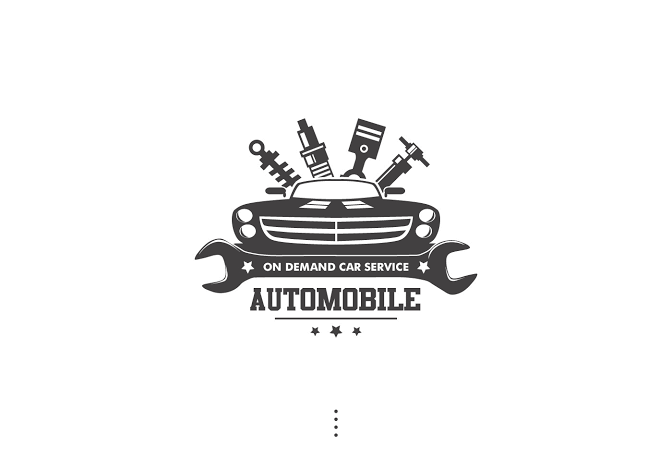
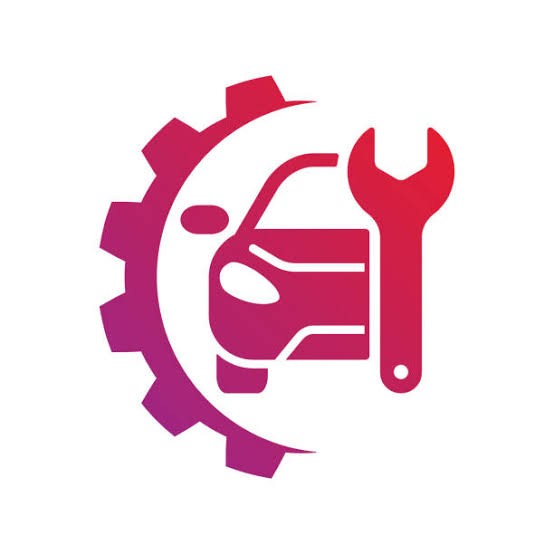
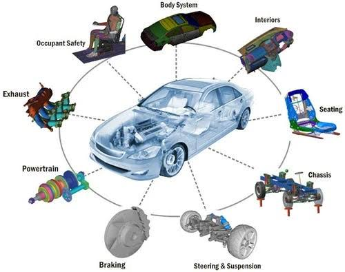
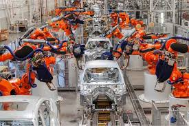

What is Automobile Engineering?

Automobile Engineering (also called Automotive Engineering) is a branch of engineering that focuses on the design, development, testing, production, and maintenance of vehicles such as cars, buses, trucks, and two-wheelers. It integrates mechanical, electrical, electronics, materials, and computer engineering to build safe, efficient, and reliable vehicles.
Key Areas of Study

- Powertrain & Engines – IC engines, turbocharging, hybrid/EV drivetrains.
- Vehicle Dynamics – suspension, steering, braking, ride & handling.
- Automotive Electronics – ECUs, sensors, CAN, diagnostics (OBD).
- Design & CAD/CAE – 3D modeling, FEA, CFD, rapid prototyping.
- Manufacturing – stamping, welding, painting, assembly, quality control.
- Emissions & Regulations – BS/Euro norms, after-treatment (CAT, DPF).
- Safety – crashworthiness, airbags, ABS/ESC, ADAS.
Applications

- Passenger cars, commercial vehicles, and two/three-wheelers.
- Electric vehicles (motors, batteries, BMS, inverters).
- Motorsport engineering and performance tuning.
- Telematics, infotainment, and connectivity.
- Testing & homologation (NVH, durability, emissions).
Future of Automobile Engineering
The auto industry is rapidly moving toward electrification, connectivity, autonomy, and shared mobility. Engineers are focusing on solid-state batteries, fast charging, lightweight materials, over-the-air updates, cybersecurity, and advanced driver-assistance systems leading to higher levels of vehicle autonomy.

Note: Sustainable design (recyclable materials, energy-efficient manufacturing) and lifecycle assessments are increasingly important for greener mobility.